- Read/Write/Opendata
- ETL: Extraction/Transform/Load
- 需要的套件
library(dplyr)
library(data.table)
library(reshape2)
library(ggplot2)
Rafe Liu (rafe@dsp.im)
library(dplyr)
library(data.table)
library(reshape2)
library(ggplot2)
# 筆記法getwd(), setwd()UTF8 或 BIG5
readLines, read.csv....raw <- readLines('檔案路徑', encoding = "BIG-5")
# 從big5轉utf8
raw2 <- iconv(raw, from = "BIG-5", to = "UTF-8")
# 存檔囉～～
write.csv(file = "ubikeweatherutf8.csv", x = raw2, fileEncoding = "UTF-8")
# 必先確認 Working Directory!
# getwd(), setwd()
# read.csv
ubike <- read.csv("./data/ubike-weather-utf8.csv",
colClasses = c("factor","integer","integer","factor","factor",
"numeric","numeric","integer","numeric","integer",
"integer","numeric","numeric", "integer","integer",
"numeric","numeric","numeric", "numeric","numeric",
"numeric", "numeric","numeric"), fileEncoding = 'utf8')
# 以 colClasses 控制每個欄位的 class，這可使讀檔加速
# 以 fileEncoding 定義檔案編碼
library(data.table)
ubike <- fread("./data/ubike-weather-utf8.csv",
data.table = FALSE,
colClasses = c("factor","integer","integer","factor","factor",
"numeric","numeric","integer","numeric","integer",
"integer","numeric","numeric","integer","integer",
"numeric","numeric","numeric","numeric","numeric",
"numeric", "numeric","numeric"))
CAUTION!colnames(ubike) <- c("日期","時間","場站代號","場站區域","場站名稱",
"經度","緯度","總停車格","平均車輛數","最大車輛數",
"最小車輛數","車輛數標準差","平均空位數","最大空位數","最小空位數",
"空位數標準差","氣溫","最高溫","最低溫","溼度",
"氣壓","最大風速","降雨量")
| X1 | X2 | X3 | X4 |
|---|---|---|---|
| 日期 | date | 車輛數標準差 | std.sbi |
| 時間 | hour | 平均空位數 | avg.bemp |
| 場站代號 | sno | 最大空位數 | max.bemp |
| 場站區域 | sarea | 最小空位數 | min.bemp |
| 場站名稱 | sna | 空位數標準差 | std.bemp |
| 經度 | lat | 氣溫 | temp |
| 緯度 | lng | 最高溫 | max.temp |
| 總停車格 | tot | 最低溫 | min.temp |
| 平均車輛數 | avg.sbi | 溼度 | humidity |
| 最大車輛數 | max.sbi | 氣壓 | pressure |
| 最小車輛數 | min.sbi |
# structure, summary of ubike dataset
str(ubike)
# head可以取出前幾列
head(ubike)
# tail可以取最後幾列
tail(ubike)
# 利用座標來取值，第一個數表示列位，第二個數表示欄位
ubike[3,2]
# 可一次選擇多列多欄
ubike[c(3:4), c(2:5,7)]
# 加上負號可剔除列位欄位
ubike[c(3:4), -c(6:21)]
ubike[,4]
ubike[,"sna"]
ubike[["sna"]]
ubike$場站名稱
ubike[ubike$sna%in% c("台北市災害應變中心", "世貿三館"), ]
magrittr 解決了這個問題# OLD school
ans1 <- ubike$sna
ans1.1 <- unique(ans1) # unique可列出所有不重複的項目
print(head(ans1.1, n = 10))
# pipeline
library(magrittr)
ubike$sna %>%
unique() %>% head(n = 10) %>%
print()
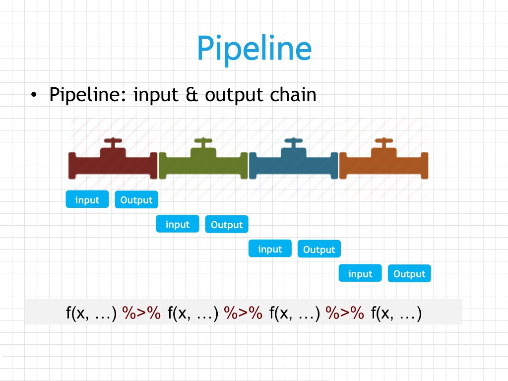
magrittr pipelinedata.frame 做設計（名稱中的d）data.frame 或資料庫中的表格）vignettevignette(all = TRUE, package = "dplyr")
vignette("introduction", package = "dplyr")
filter 對列做篩選select 對欄做篩選mutate 更改欄或新增欄arrange 排列group_by+summarise 依照類別處理小明想在永和找到新房子，希望以後上下班都靠 ubike 通勤，希望早上可以輕鬆租到車，下班後也可以輕鬆還車。
mutate() 與 summarise() 之不同library(dplyr)
head(ubike)
select(ubike, hour, sarea, sna, avg.sbi) %>%
filter(sarea == '中和區' & hour == 7) %>%
mutate(avg.sbi = floor(avg.sbi))
select(ubike, hour, sarea, sna, avg.sbi) %>%
filter(sarea == '中和區' & hour == 7) %>%
group_by(hour, sarea, sna) %>%
summarise(avg = mean(avg.sbi) %>% round()) %>%
arrange(avg %>% desc())
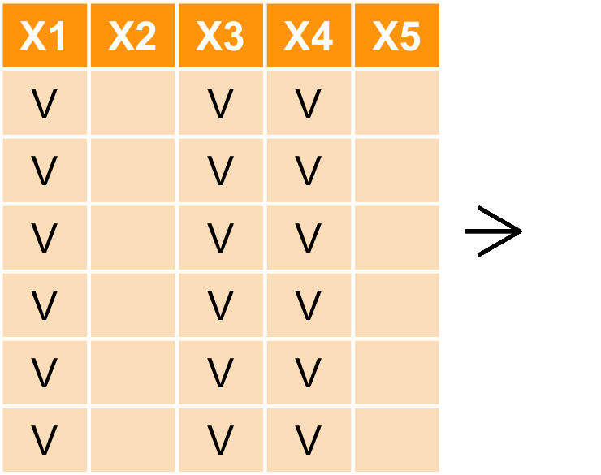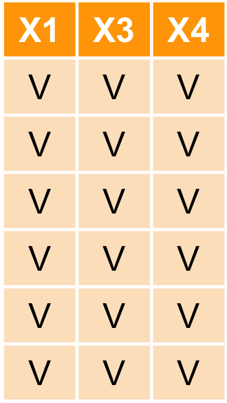
| hour | sarea | sna | avg.sbi |
|---|---|---|---|
| 15 | 大安區 | 捷運國父紀念館站(2號出口) | 24.000 |
| 15 | 信義區 | 台北市政府 | 10.333 |
| 15 | 信義區 | 市民廣場 | 39.333 |
| 15 | 信義區 | 興雅國中 | 34.167 |
| 15 | 信義區 | 世貿二館 | 31.333 |
| 15 | 信義區 | 信義廣場(台北101) | 23.571 |
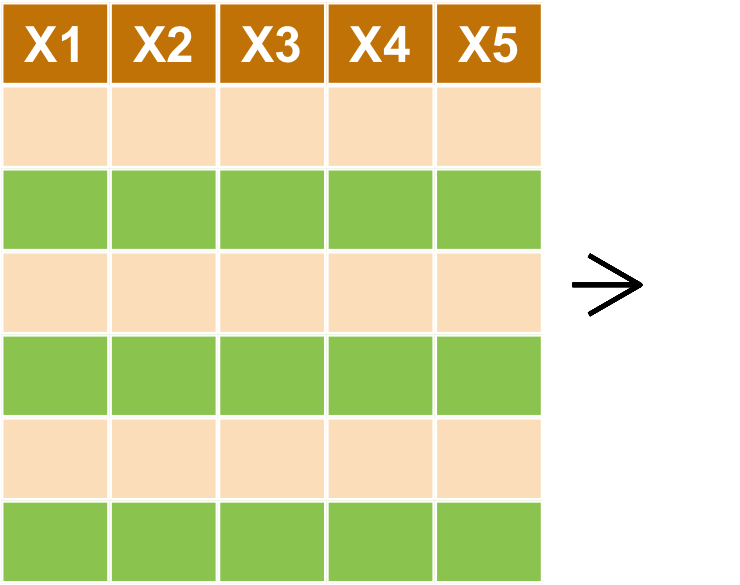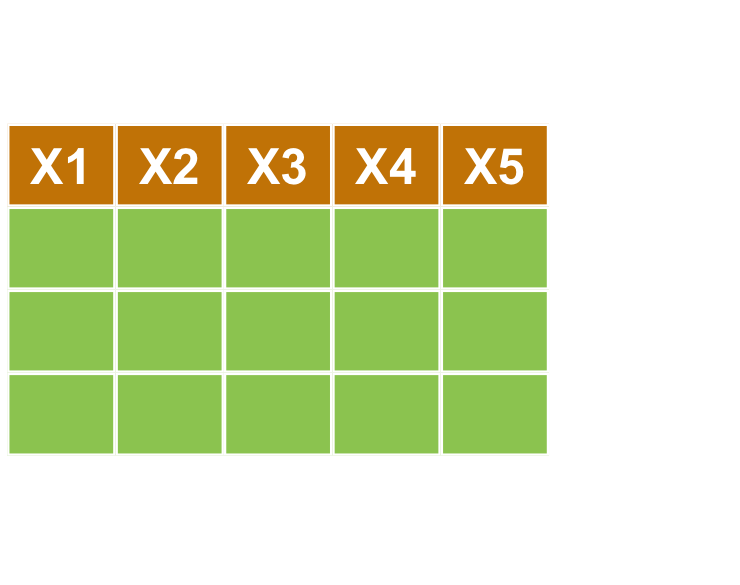
select(ubike, hour, sarea, sna, avg.sbi) %>%
filter(sarea == '中和區' & hour == 7)
| hour | sarea | sna | avg.sbi |
|---|---|---|---|
| 7 | 中和區 | 秀山國小 | 0.000 |
| 7 | 中和區 | 捷運永安市場站 | 1.733 |
| 7 | 中和區 | 中和公園 | 0.267 |
| 7 | 中和區 | 秀山國小 | 33.800 |
| 7 | 中和區 | 捷運永安市場站 | 6.467 |
| 7 | 中和區 | 中和公園 | 4.600 |
| 7 | 中和區 | 秀山國小 | 37.400 |
| 7 | 中和區 | 捷運永安市場站 | 12.867 |
| 7 | 中和區 | 中和公園 | 1.467 |
| 7 | 中和區 | 秀山國小 | 31.867 |
| 7 | 中和區 | 捷運永安市場站 | 19.267 |
| 7 | 中和區 | 中和公園 | 29.067 |
| 7 | 中和區 | 捷運永安市場站 | 13.600 |
| 7 | 中和區 | 中和公園 | 6.133 |
| 7 | 中和區 | 秀山國小 | 38.600 |
| 7 | 中和區 | 秀山國小 | 33.000 |
| 7 | 中和區 | 捷運永安市場站 | 1.600 |
| 7 | 中和區 | 中和公園 | 9.200 |
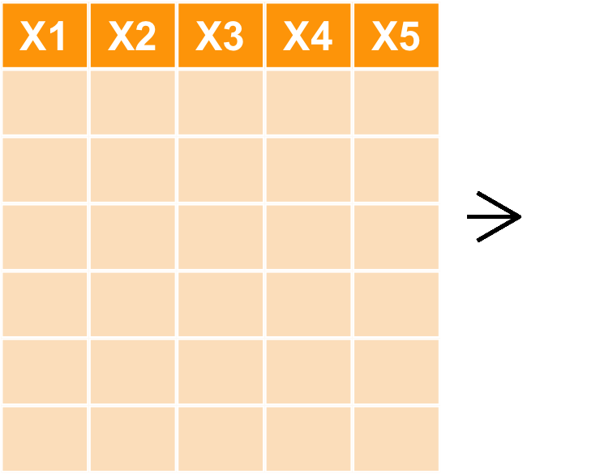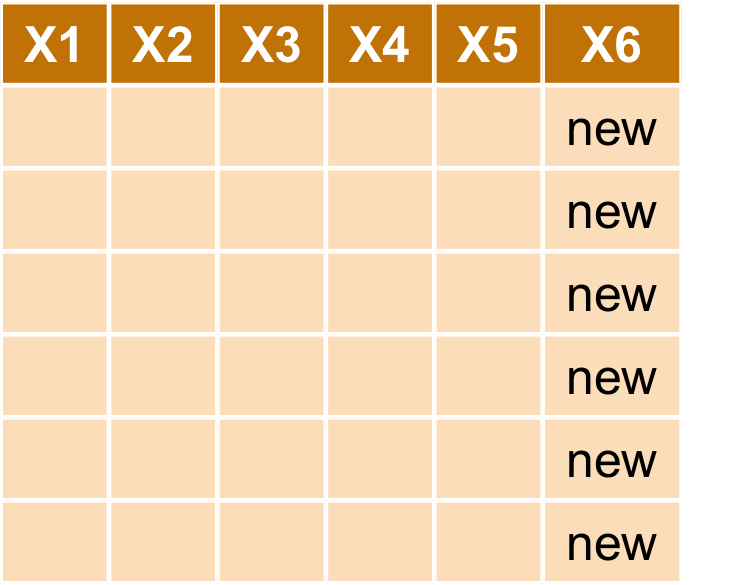
select(ubike, hour, sarea, sna, avg.sbi) %>%
filter(sarea == '中和區' & hour == 7) %>%
mutate(avg.sbi = floor(avg.sbi))
| hour | sarea | sna | avg.sbi |
|---|---|---|---|
| 7 | 中和區 | 秀山國小 | 0 |
| 7 | 中和區 | 捷運永安市場站 | 1 |
| 7 | 中和區 | 中和公園 | 0 |
| 7 | 中和區 | 秀山國小 | 33 |
| 7 | 中和區 | 捷運永安市場站 | 6 |
| 7 | 中和區 | 中和公園 | 4 |
| 7 | 中和區 | 秀山國小 | 37 |
| 7 | 中和區 | 捷運永安市場站 | 12 |
| 7 | 中和區 | 中和公園 | 1 |
| 7 | 中和區 | 秀山國小 | 31 |
| 7 | 中和區 | 捷運永安市場站 | 19 |
| 7 | 中和區 | 中和公園 | 29 |
| 7 | 中和區 | 捷運永安市場站 | 13 |
| 7 | 中和區 | 中和公園 | 6 |
| 7 | 中和區 | 秀山國小 | 38 |
| 7 | 中和區 | 秀山國小 | 33 |
| 7 | 中和區 | 捷運永安市場站 | 1 |
| 7 | 中和區 | 中和公園 | 9 |
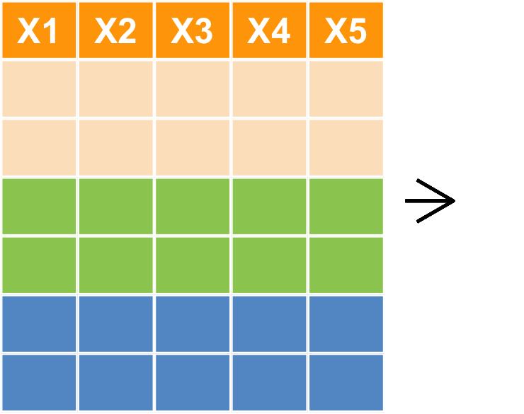
select(ubike, hour, sarea, sna, avg.sbi) %>%
filter(sarea == '中和區' & hour == 7) %>%
group_by(hour, sarea, sna)
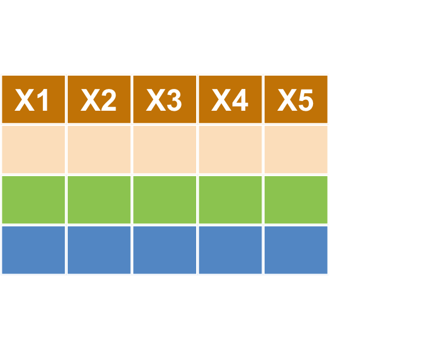
select(ubike, hour, sarea, sna, avg.sbi) %>%
filter(sarea == '中和區' & hour == 7) %>%
group_by(hour, sarea, sna) %>%
summarise(avg = mean(avg.sbi) %>% round())
| hour | sarea | sna | avg |
|---|---|---|---|
| 7 | 中和區 | 捷運永安市場站 | 9 |
| 7 | 中和區 | 秀山國小 | 29 |
| 7 | 中和區 | 中和公園 | 8 |
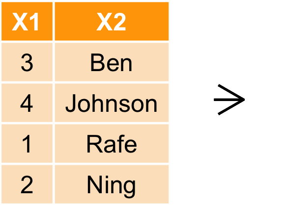
select(ubike, hour, sarea, sna, avg.sbi) %>%
filter(sarea == '中和區' & hour == 7) %>%
group_by(hour, sarea, sna) %>%
summarise(avg = mean(avg.sbi) %>% round()) %>%
arrange(avg %>% desc())
| hour | sarea | sna | avg |
|---|---|---|---|
| 7 | 中和區 | 秀山國小 | 29 |
| 7 | 中和區 | 捷運永安市場站 | 9 |
| 7 | 中和區 | 中和公園 | 8 |
小明發現住信義區的話，八點騎腳踏車就可以準時上班，還可以順便吃早餐，請幫忙找出信義區各車站八點車子最多的站
| hour | sarea | sna | avg |
|---|---|---|---|
| 8 | 信義區 | 捷運市政府站(3號出口) | 98 |
| 8 | 信義區 | 福德公園 | 31 |
| 8 | 信義區 | 興雅國中 | 31 |
| 8 | 信義區 | 台北市災害應變中心 | 30 |
| 8 | 信義區 | 世貿二館 | 29 |
| 8 | 信義區 | 世貿三館 | 29 |
| 8 | 信義區 | 吳興公車總站 | 29 |
| 8 | 信義區 | 三張犁 | 27 |
| 8 | 信義區 | 松山家商 | 26 |
| 8 | 信義區 | 市民廣場 | 24 |
| 8 | 信義區 | 信義廣場(台北101) | 23 |
| 8 | 信義區 | 捷運象山站 | 22 |
| 8 | 信義區 | 松德站 | 21 |
| 8 | 信義區 | 松德公園 | 20 |
| 8 | 信義區 | 台北市政府 | 16 |
| 8 | 信義區 | 捷運台北101/世貿站 | 15 |
| 8 | 信義區 | 五常公園 | 15 |
| 8 | 信義區 | 臺北醫學大學 | 14 |
| 8 | 信義區 | 仁愛逸仙路口 | 13 |
| 8 | 信義區 | 中強公園 | 10 |
| 8 | 信義區 | 捷運永春站(2號出口) | 8 |
| 8 | 信義區 | 永吉松信路口 | 8 |
| 8 | 信義區 | 基隆光復路口 | 5 |
小明喜歡玩遙控飛機，在中和希望找一個下午三點風比較小的地點吧
| sna | avg_anemo |
|---|---|
| 白雲國小 | 2.094692 |
| 汐止區公所 | 2.281363 |
| 汐科火車站(北) | 2.283358 |
| 汐止火車站 | 2.393386 |
| 國泰綜合醫院 | 2.472844 |
| 樟樹國小 | 2.509820 |
| 金龍國小 | 2.718062 |
| 金龍公園 | NaN |
| 文化白雲公園 | NaN |
bind_rows(a,b)
bind_cols(a,b)
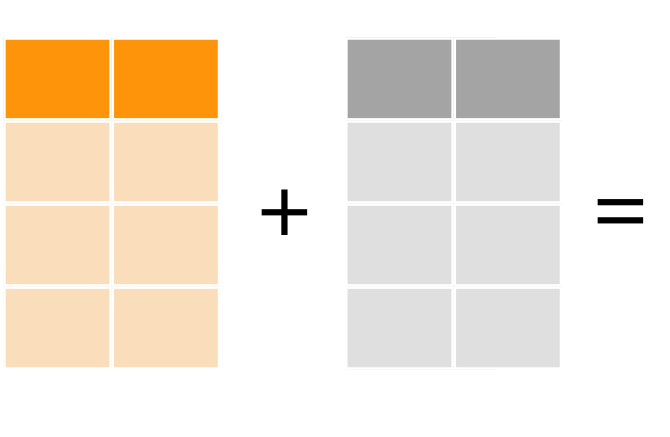
bind_rows(a,b)
bind_cols(a,b)
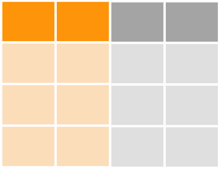
V1 <- data.frame('x1' = c("a", "b"), 'x2' = c(1, 2), stringsAsFactors = F)
V2 <- data.frame('x1' = c("c", "d"), 'x2' = c(3, 4), stringsAsFactors = F)
bind_rows(V1, V2)
## Source: local data frame [4 x 2]
##
## x1 x2
## (chr) (dbl)
## 1 a 1
## 2 b 2
## 3 c 3
## 4 d 4
# rbind(V1, V2)
bind_cols(V1, V2)
## Source: local data frame [2 x 4]
##
## x1 x2 x1 x2
## (chr) (dbl) (chr) (dbl)
## 1 a 1 c 3
## 2 b 2 d 4
# cbind(V1, V2)
## [1] "ubike"
## date hour sno sarea
## 1 2014-12-08 15 2 大安區
## 2 2014-12-08 15 3 信義區
## 3 2014-12-08 15 4 信義區
## 4 2014-12-08 15 5 信義區
## 5 2014-12-08 15 6 信義區
## 6 2014-12-08 15 7 信義區
## sna lat
## 1 捷運國父紀念館站(2號出口) 25.04100
## 2 台北市政府 25.03780
## 3 市民廣場 25.03604
## 4 興雅國中 25.03656
## 5 世貿二館 25.03474
## 6 信義廣場(台北101) 25.03304
## lng tot avg.sbi max.sbi min.sbi
## 1 121.5569 48 24.000 27 23
## 2 121.5652 40 10.333 13 8
## 3 121.5623 60 39.333 40 38
## 4 121.5687 60 34.167 35 33
## 5 121.5657 80 31.333 32 31
## 6 121.5656 80 23.571 25 23
## std.sbi avg.bemp max.bemp min.bemp
## 1 1.549 22.000 23 19
## 2 1.862 29.667 32 27
## 3 1.033 20.667 22 20
## 4 0.753 25.833 27 25
## 5 0.516 47.667 48 47
## 6 0.787 56.429 57 55
## std.bemp temp max.temp min.temp
## 1 2 16.48540 18.92624 16.31619
## 2 2 16.23521 18.87352 16.19314
## 3 1 16.31182 18.92314 16.25390
## 4 1 16.15933 18.85769 16.14964
## 5 1 16.24925 18.92068 16.22725
## 6 1 16.27070 18.95194 16.25447
## humidity pressure max.anemo rainfall
## 1 89.86846 1020.564 2.624850 14.59040
## 2 91.76065 1020.155 2.419942 14.32084
## 3 91.62050 1020.364 2.610151 14.07341
## 4 92.37895 1020.112 2.473311 14.42523
## 5 92.31611 1020.328 2.600451 13.96550
## 6 92.58300 1020.433 2.704997 13.60852
## Error: Table ubike exists in database, and both overwrite and append are FALSE
## [1] TRUE
left_join(a,b,by=X1)
right_join(a,b,by=X1)
inner_join(a,b,by=X1)
full_join(a,by=X1)
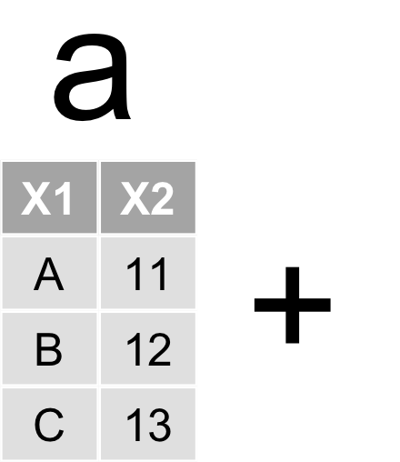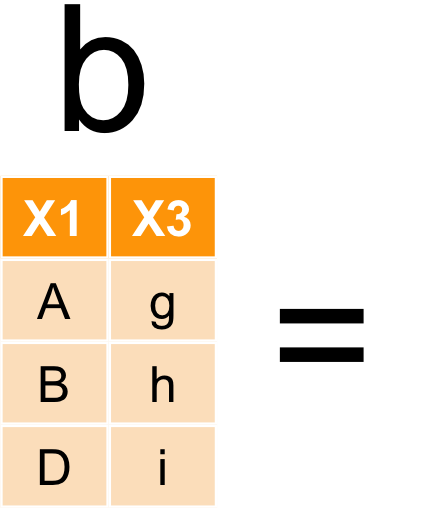
left_join(a,b,by=X1)
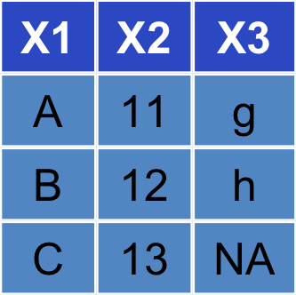
right_join(a,b,by=X1)
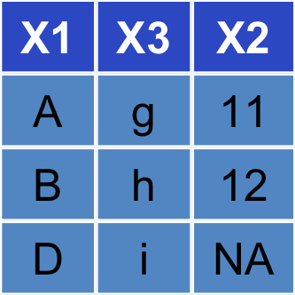
inner_join(a,b,by=X1)
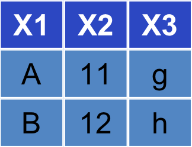
full_join(a,b,by=X1)
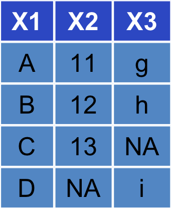
V1 <- data.frame('x1' = c("a", "b", "c"), 'x2' = c(11, 12, 13), stringsAsFactors = F)
V2 <- data.frame('x1' = c("a", "b", "d"), 'x3' = c(21, 22, 23), stringsAsFactors = F)
left_join(V1, V2)
## Joining by: "x1"
## x1 x2 x3
## 1 a 11 21
## 2 b 12 22
## 3 c 13 NA
intersect(a,b)
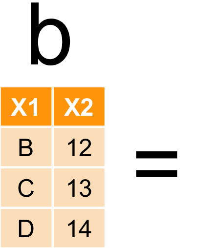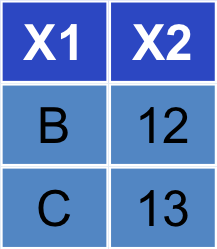
union(a,b)
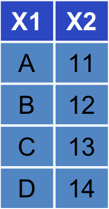
setdiff(a,b)

dcast for data.frameacast for vector, matrix and arraydata("WorldPhones")
WP <- as.data.frame(WorldPhones)
WP$year <- rownames(WP)
WP.melt <- melt(WP, id.var = 'year')
| N.Amer | Europe | Asia | S.Amer | Oceania | Africa | Mid.Amer | year | |
|---|---|---|---|---|---|---|---|---|
| 1951 | 45939 | 21574 | 2876 | 1815 | 1646 | 89 | 555 | 1951 |
| 1956 | 60423 | 29990 | 4708 | 2568 | 2366 | 1411 | 733 | 1956 |
| 1957 | 64721 | 32510 | 5230 | 2695 | 2526 | 1546 | 773 | 1957 |
| 1958 | 68484 | 35218 | 6662 | 2845 | 2691 | 1663 | 836 | 1958 |
| 1959 | 71799 | 37598 | 6856 | 3000 | 2868 | 1769 | 911 | 1959 |
| 1960 | 76036 | 40341 | 8220 | 3145 | 3054 | 1905 | 1008 | 1960 |
| year | variable | value |
|---|---|---|
| 1951 | N.Amer | 45939 |
| 1956 | N.Amer | 60423 |
| 1957 | N.Amer | 64721 |
| 1958 | N.Amer | 68484 |
| 1959 | N.Amer | 71799 |
| 1960 | N.Amer | 76036 |
WP.cast <- dcast(WP.melt, year ~ variable, value.var="value")
| year | N.Amer | Europe | Asia | S.Amer | Oceania | Africa | Mid.Amer |
|---|---|---|---|---|---|---|---|
| 1951 | 45939 | 21574 | 2876 | 1815 | 1646 | 89 | 555 |
| 1956 | 60423 | 29990 | 4708 | 2568 | 2366 | 1411 | 733 |
| 1957 | 64721 | 32510 | 5230 | 2695 | 2526 | 1546 | 773 |
| 1958 | 68484 | 35218 | 6662 | 2845 | 2691 | 1663 | 836 |
| 1959 | 71799 | 37598 | 6856 | 3000 | 2868 | 1769 | 911 |
| 1960 | 76036 | 40341 | 8220 | 3145 | 3054 | 1905 | 1008 |
| 1961 | 79831 | 43173 | 9053 | 3338 | 3224 | 2005 | 1076 |
小明想知道信義區的腳踏車站晴天和雨天的使用率有何差別 提示：
filter、mutate、select、group_by、summarisedcastarrange| sna | 晴天 | 雨天 |
|---|---|---|
| 永吉松信路口 | 0.8720583 | 0.4744500 |
| 信義廣場(台北101) | 0.7952094 | 0.5329188 |
| 捷運永春站(2號出口) | 0.7888917 | 0.4466667 |
| 市民廣場 | 0.7369417 | 0.3238917 |
| 捷運台北101/世貿站 | 0.7294856 | 0.6448654 |
| 基隆光復路口 | 0.7277750 | 0.7589000 |
| 仁愛逸仙路口 | 0.6532895 | 0.5921053 |
| 三張犁 | 0.6409129 | 0.4242424 |
| 五常公園 | 0.6233278 | 0.3536944 |
| 中強公園 | 0.6216667 | 0.7833333 |
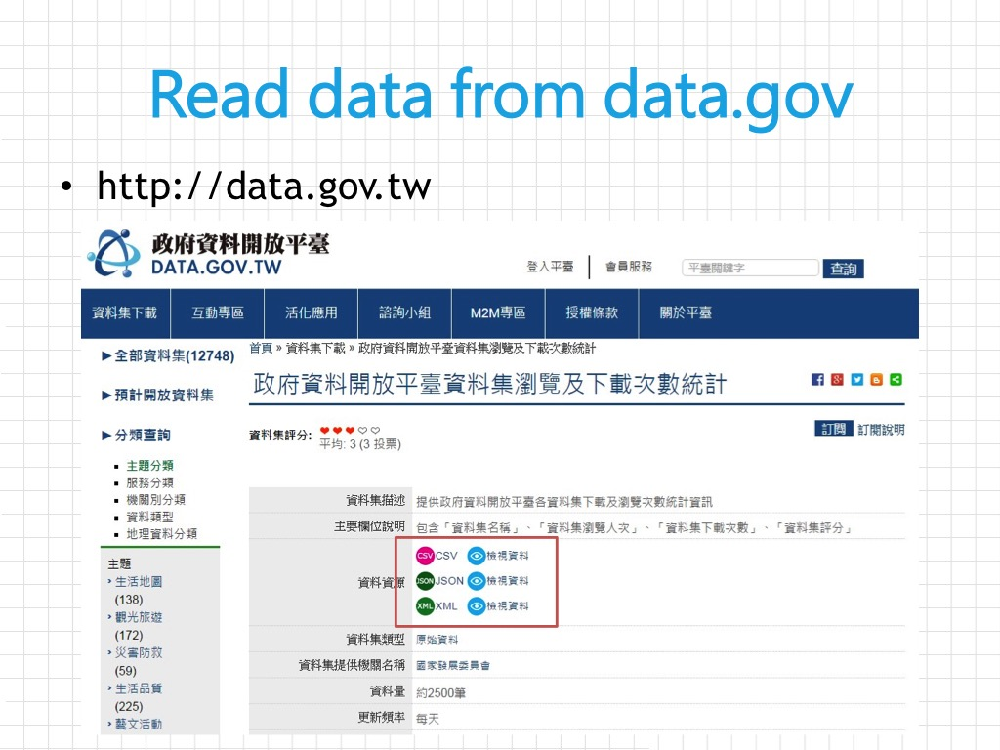
| STR | CLASS | TYPE.MAIN | COUNT | PERC |
|---|---|---|---|---|
| YES | Sheets | CSV | 7224 | 35.03 % |
| XML | 6879 | 33.36 % | ||
| JSON | 1579 | 7.66 % | ||
| RSS | 113 | 0.55 % | ||
| MAPs | KML | 51 | 0.25 % | |
| WMS | 31 | 0.15 % | ||
| SHP | 82 | 0.4 % | ||
| KMZ | 9 | 0.04 % | ||
| WMTS | 7 | 0.03 % | ||
| WebPage | WebPage | 2 | 0.01 % | |
| API | ASMX | 1 | 0 % | |
| DEMDSM | 1 | 0 % |
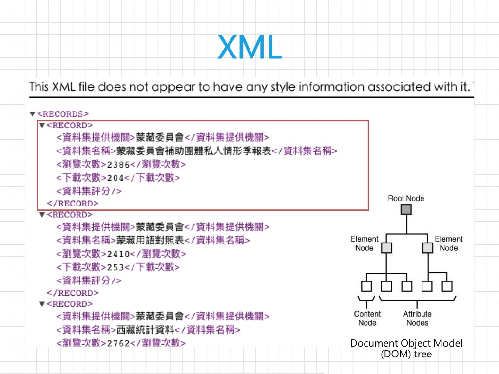
# (1) .csv
url <- "http://data.gov.tw/iisi/logaccess/165?dataUrl=http://opendata.epa.gov.tw/ws/Data/AQX/?format=csv&ndctype=CSV&ndcnid=6074"
y <- read.csv(url, sep = ",", stringsAsFactors = F, header = T)
# (2) json files
library(jsonlite)
url <- 'http://data.gov.tw/iisi/logaccess/166?dataUrl=http://opendata.epa.gov.tw/ws/Data/AQX/?format=json&ndctype=JSON&ndcnid=6074'
y <- fromJSON(url, flatten = TRUE)
y <- as.data.frame(y$Records)
# (3) XML
library(XML)
url <- 'http://data.gov.tw/iisi/logaccess/167?dataUrl=http://opendata.epa.gov.tw/ws/Data/AQX/?format=xml&ndctype=XML&ndcnid=6074'
x <- xmlParse(url) # 以 xmlParse 解析 XML 檔案
xmlfiles <- xmlRoot(x) # 將 root 設定到 content 層級（一個偷吃步的做法）
y <- xmlToDataFrame(xmlfiles) # 轉換成 dataframe
# 將整理完成的檔案存成 CSV
write.csv(file = 'open.csv', y, fileEncoding = 'big5')